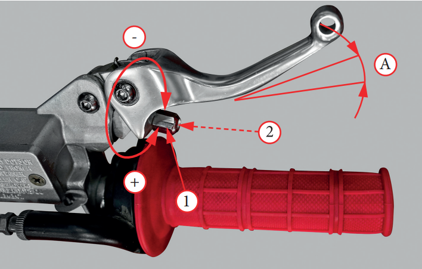
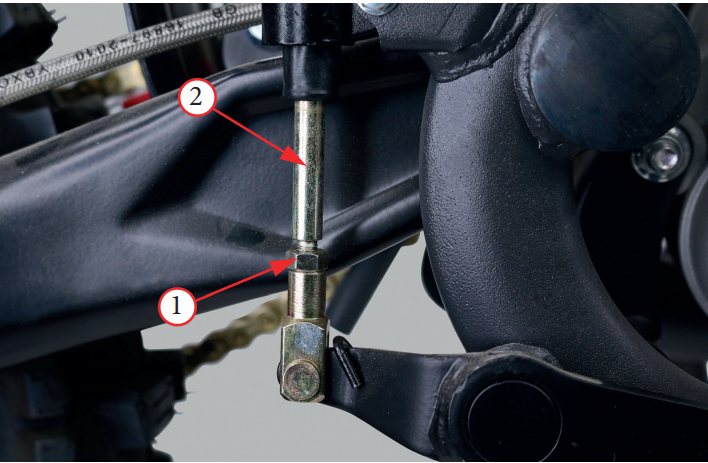
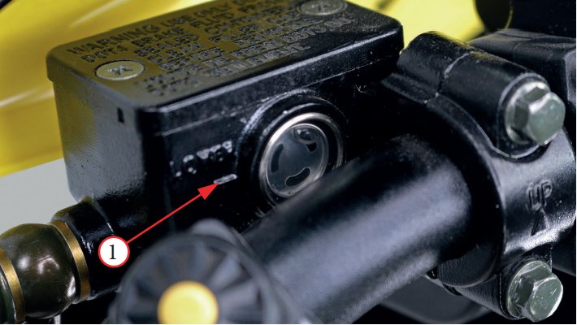
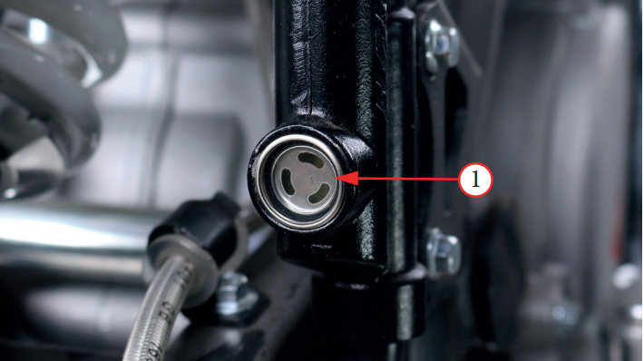
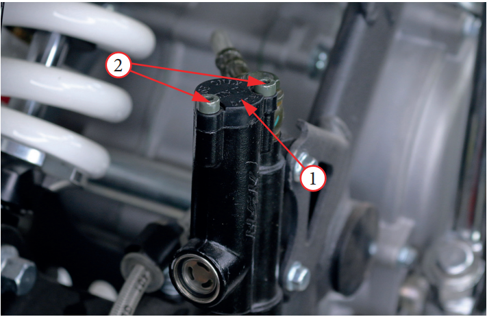

Регулировка рычага переднего тормоза
(на некоторых моделях данная регулировка
отсутствует)
- Ослабьте
контргайку
1
- Для уменьшения свободного хода рычага необходимо поворачивать
регулятор
2 по часовой стрелке направление «–».
Для увеличения свободного хода рычага необходимо поворачивать регулятор
2 против часовой стрелки направление
«+»
- Удерживая
регулятор
2, затяните контргайку
1 с моментом
6 Н•м
- Выжмите рычаг тормоза, отпустите его, затем раскрутите
колесо и убедитесь в его свободном вращении. Повторите
эту операцию несколько раз
Проверьте величину свободного хода «А», плавно выжимая
рычаг до начала срабатывания тормозных механизмов. Свободный ход «А» рычага переднего тормоза должен составлять
не менее 3 мм
Если величина свободного хода превышает 20 мм, это может указывать на проникновение воздуха в тормозную систему. В таком
случае необходимо провести прокачку тормозной системы
Регулировка высоты педали заднего тормоза
Высота педали заднего тормоза должна быть приблизительно на одном уровне с правой подножкой
- Ослабьте
контргайку
1 и поворачивайте регулировочный болт
2 вправо, чтобы увеличить высоту педали, или влево,
чтобы уменьшить высоту педали
- После достижения необходимой высоты необходимо затянуть
контргайку
1 с моментом 6 Н•м
- На некоторых моделях задний тормоз не регулируется
Проверка уровня тормозной жидкости в переднем тормозном контуре
Уровень тормозной жидкости уменьшается по мере износа тормозных колодок.
Проверьте уровень жидкости(в
переднем
и заднем
контуре) на вертикально стоящем питбайке.
Он должен быть выше нижней отметки 1. Если уровень находится на этой отметке или ниже нее, проверьте состояние
тормозных колодок.
Изношенные колодки подлежат замене. Если колодки не изношены, проверьте тормозную систему на наличие протечек.
- Очистите всю грязь и пыль с крышки 1 (
переднего
и заднего
) резервуара
- Выкрутите винты (
переднего
и ) 2 из крышки резервуара 1, поворачивая их против часовой стрелки
- Будьте осторожны, чтобы не повредить резиновую диафрагму, которая находится под крышкой 1
- Залейте в резервуар тормозную жидкость DOT4 до отметки максимального уровня. Не допускайте перелива. Всегда используйте жидкость из запечатанной бутылки
- Установите на место диафрагму и крышку(
переднего
и ) резервуара 1
- Затяните винты 2 с моментом 1 Н•м
- Нажмите рычаг тормоза, чтобы убедиться, что тормоза работают должным образом
- Проверьте тормозные шланги и суппорты на наличие утечек